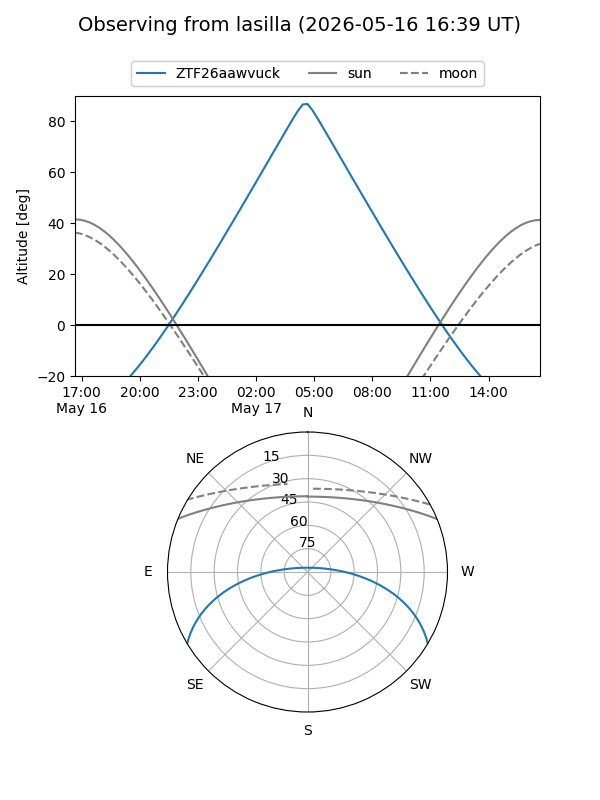
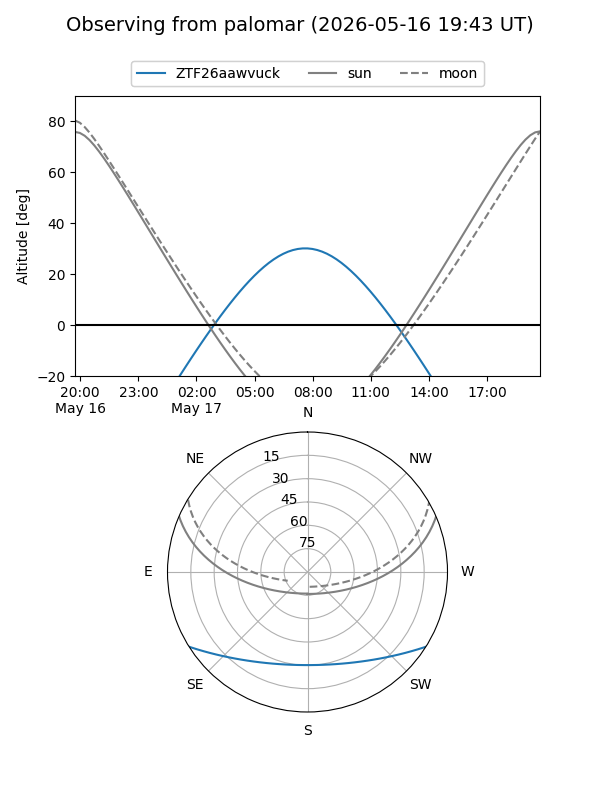

ZTF26aawvuck
Target ZTF26aawvuck at 2026-05-17 10:00
Aliases and brokers:
FINK: link
Lasair: link
ALeRCE: link
alt names
ZTF26aawvuck (ztf,fink_ztf)
Coordinates:
equatorial (ra, dec) = 231.9106,-26.39970
equatorial (HMS+DMS) = 15:27:38.54,-26:23:58.94
galactic (l, b) = (341.2962,+24.60304)
Flags:
Photometry:
last ztfg=16.83
2 ztfg detections
Lightcurve
Visibility


Additional plots